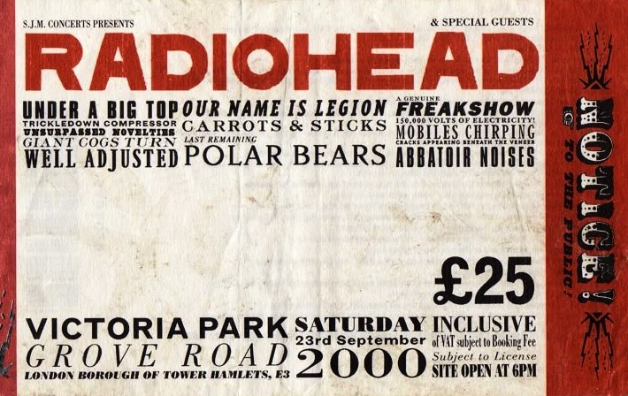
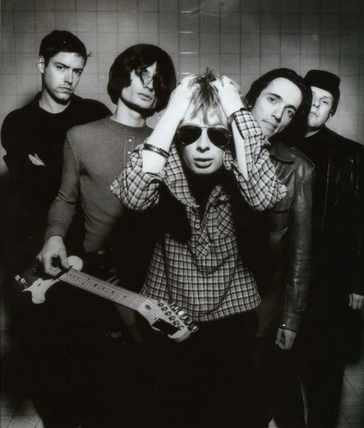

RADIOHEAD:
IN RAINBOWS
OCT. 2007
7TH STUDIO ALBUM
42:38
15 STEP 3:37
"How come I end up where I started?
How come I end up where I went wrong?"
BODYSNATCHERS 4:02
"I have no idea what I am talking about.
I'm trapped in this body and I can't get out."
★ NUDE 4:15
"You paint yourself white and fill up with noise,
but there'll be something missing."
WEIRD FISHES / ARPEGGI 5:18
"I'd be crazy not to follow,
follow where you lead."
★ ALL I NEED 3:48
"I am all the days that you choose to ignore.
You are all I need; you're all I need."
★ FAUST ARP 2:09
"I'm tingling, tingling, tingling.
It's what you feel, not what you ought to, what you ought to."
RECKONER 4:50
"You are not to blame for bittersweet distractors,
Dare not speak its name."
HOUSE OF CARDS 5:28
"I don't want to be your friend; I just want to be your lover.
No matter how it ends, no matter how it starts."
★ JIGSAW FALLING INTO PLACE 4:08
"Regard each other as you pass.
She looks back, you look back."
★ VIDEOTAPE 4:39
"This is my way of saying goodbye,
'cause I can't do it face to face."

'★' indicates Shereen's favorite songs from the album.